My name is Gerald Danuco, a 24 year old IT student born on November 19, 2000.
I live in D-1 Kinabjangan, Nasipit, Agusan del Norte. Passionate about cinematography,
I love exploring the art of visual storytelling, capturing emotions through the lens,
and experimenting with creative techniques. My goal is to use my skills to craft
impactful narratives that resonate with audiences while continuously learning and growing
in the world of filmmaking.
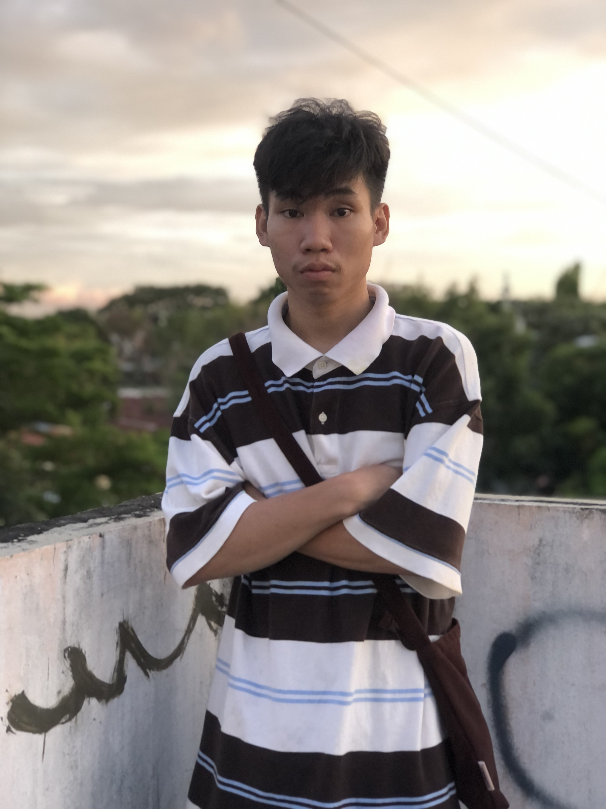
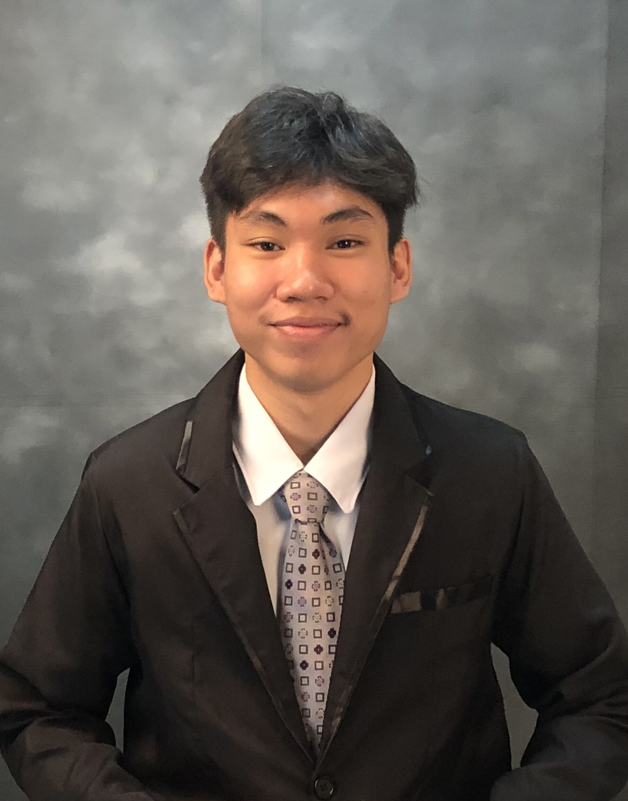
GERALD DANUCO
My Lifestory
My life when I was a kid is simple, spend time with my siblings, hang out with my friends and cheerful to other people
and being curios about something that i didn’t encounter when I was a little kid. Sometimes, I wish I could go back to what
my life was when I was a kid. Being productive and energetic, a life without stress and freewill was a blissful to me.
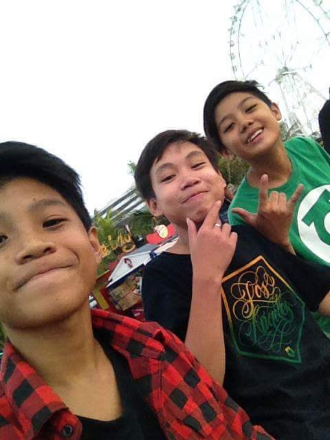
Childhood Experience
Then being a Teenager makes a life more challenging to me,
Because being a teenager is a whirlwind of emotions, self-discovery, and growth.
It’s a time of balancing school, friendships, hobbies,and dreams while
navigating the challenges of finding your identity.
Teen life is filled with unforgettable moments—late-night talks, first experiences,
and the joy of small victories. It’s about learning from mistakes,
embracing change, and figuring out who you are and who you want to be in a world that’s constantly evolving
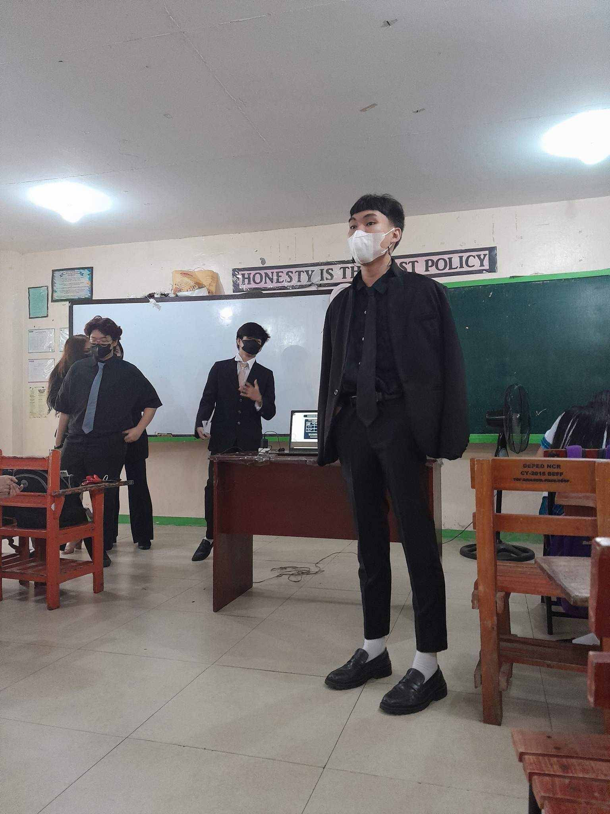
Teenage Experience
As a child, my love for creativity and curiosity blossomed into a passion for cinematography and thrifting.
I spent hours experimenting with camera apps in phone, capturing everyday moments, and turning them into stories.
Thrifting became an adventure of its own—uncovering hidden treasures and finding beauty in the unexpected.
These hobbies nurtured my imagination and taught me to see the world from unique
perspectives, laying the foundation for my journey into visual storytelling and artistic expression.
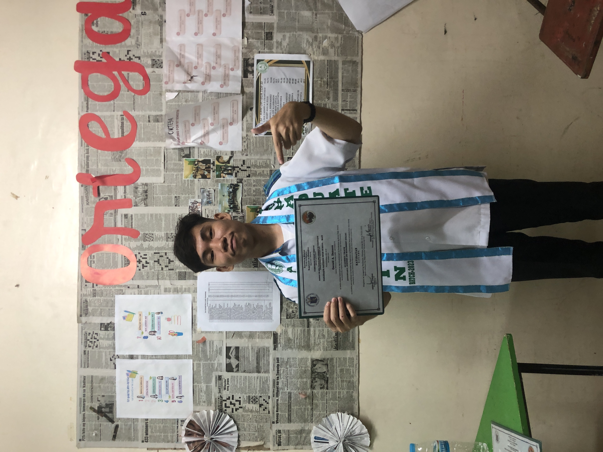
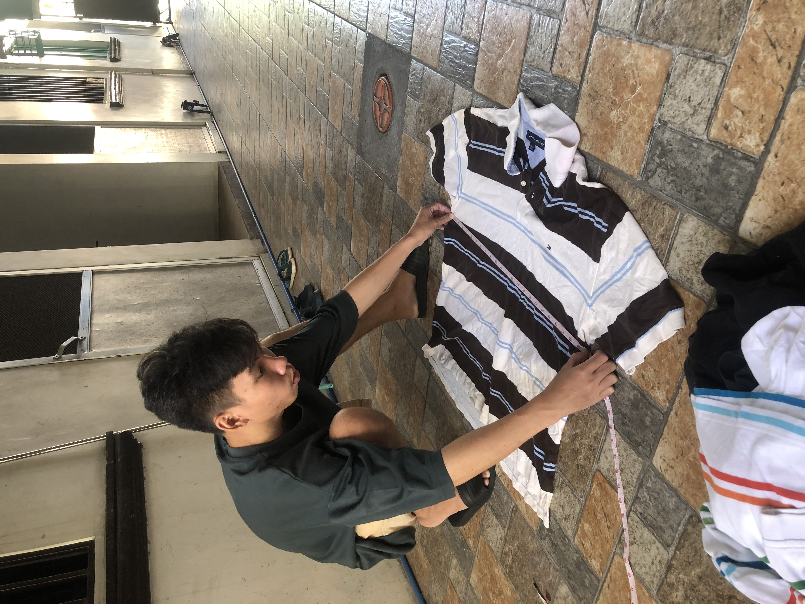
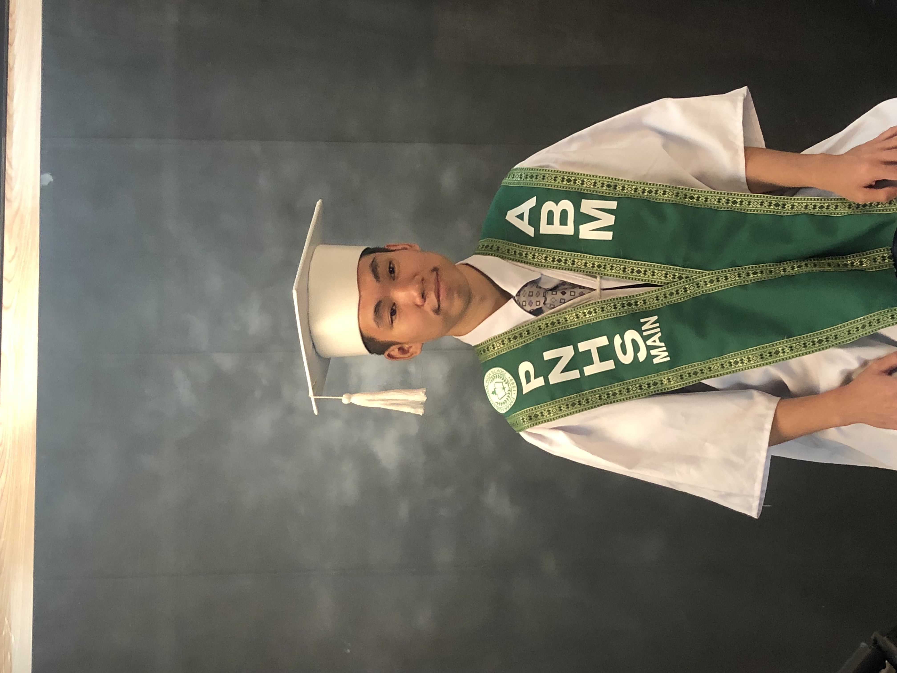
Adulthood Experience
Hobbies
Videography and photography have always been my creative escape.
Having my phone camera or sometimes i borrrow my sister's camera,
explore my surroundings, and capture the world through my lens, using visuals to express whatever
I was feeling. Over time, it became more than just a hobby—it became a way to connect with myself and tell stories
that mattered to me. Though I didn’t share every project, videography and photography became my personal sanctuary,
where I could truly be myself and lose myself in the art of visual storytelling.
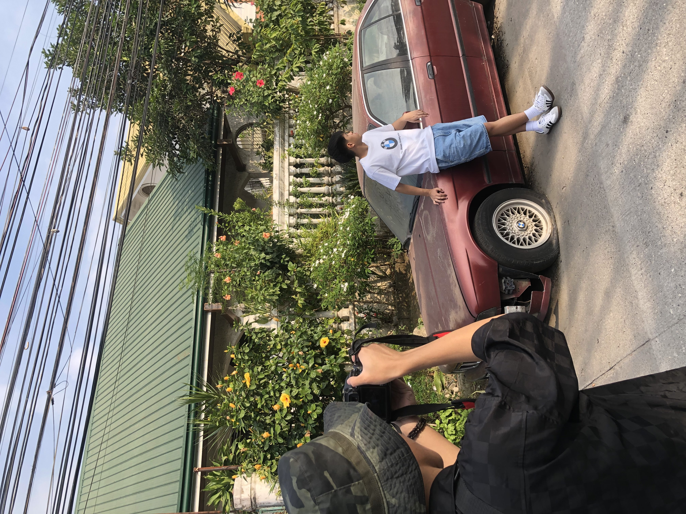
Usual Hobbies
One of my favorite ways to spend time is hanging out with friends and going thrifting together. Every weekend,
we explore thrift stores, hunting for unique finds and hidden gems.
I love the excitement of discovering something unexpected—the stories behind each item and the
laughter we share while trying on quirky outfits. It’s a fun and creative way to bond, and each outing feels like an adventure,
filled with memories and treasures that make the experience so rewarding.
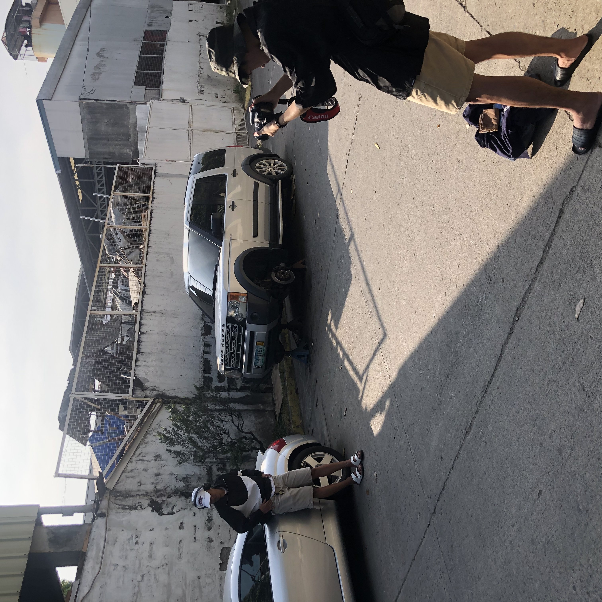
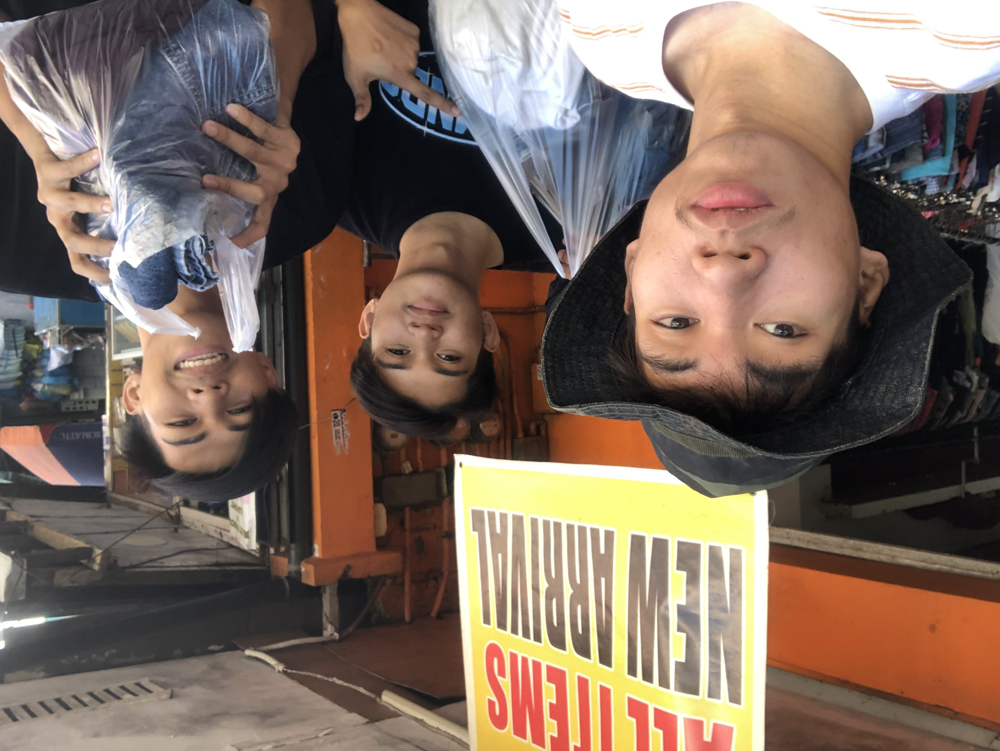
Outdoor Hobbies
Favorites
My favorite activities are watching cinematography tutorials and thrifting.
I love immersing myself in tutorials that teach the art of visual storytelling,
exploring techniques for framing, lighting, and editing to bring stories to life.
Thrifting, on the other hand, is my creative escape—searching for hidden treasures
and unique pieces that inspire new ideas. Both activities fuel my passion for creativity,
allowing me to learn, grow, and find inspiration in unexpected places.
Cinematographer
My favorite food is pares, a beloved Filipino dish known for its rich and savory flavors.
It’s made with tender beef braised in a flavorful soy-based sauce, infused with garlic, star anise, and other aromatic spices.
Pares is often served with garlic fried rice and a side of beef broth, making it a comforting and satisfying meal.
The perfect balance of sweet and savory flavors makes it my go-to dish whenever I crave something hearty and delicious.
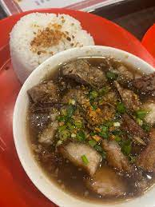
Pares
Friends
My childhood friends is my core memory to me til this day, they are my inspiration and
they keep me company when there are times that I am down. Life without them are boring
because they just like my second siblings to me. Having a friends like them are so rare
to me and I will cherish them until we successfully graduated in college soon.